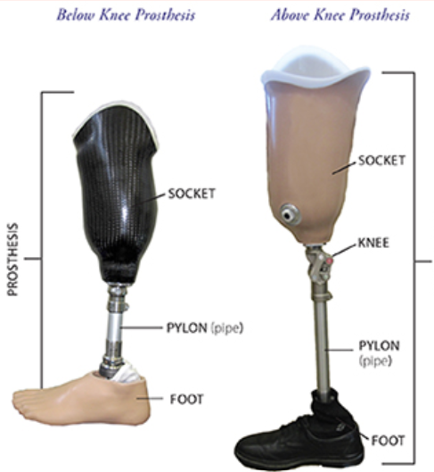

Winning the 2017 Purdue University Biomedical Engineering Senior Design competition, I designed, manufactured, and tested an adjustable prosthetic pylon for pediatric patients in developing countries. Check out the video below!
A prosthetic pylon is an oft-overlooked component of a leg prosthesis which replaces the tibia and fibula bones of the lower leg:
As children grow and develop, their tibiae and fibulae grow rapidly; for children requiring prostheses, this necessitates replacement of traditional pylons as frequently as every 6 months.
Without replacement, children will be at risk to develop biomechanical problems such as hip misalignment and spinal pain.
Due to its adjustability, LEAPP is more economical than the traditional static pylon replacement process.
LEAPP conforms to the strength requirements for leg prostheses outlined in the ISO 10328:2016 standard and would likely be considered a 510(k) exempt, class 1-designated product by the FDA.